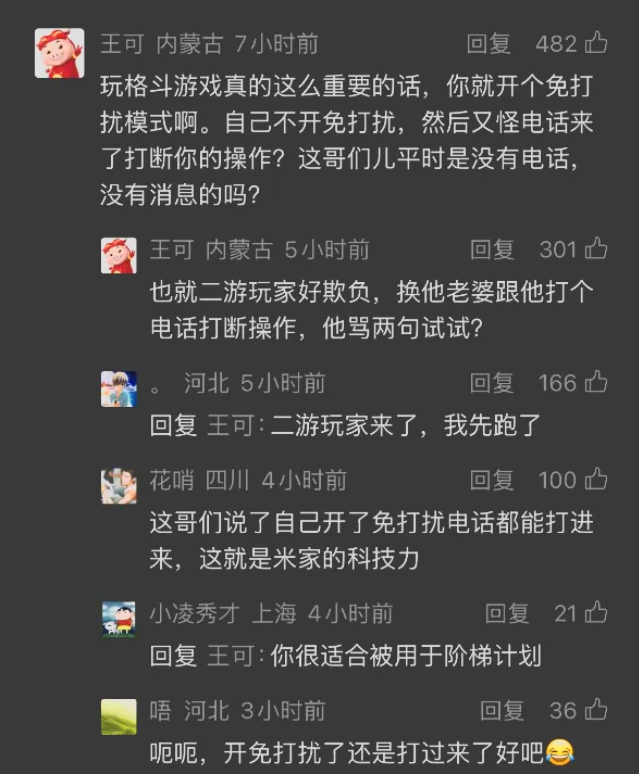
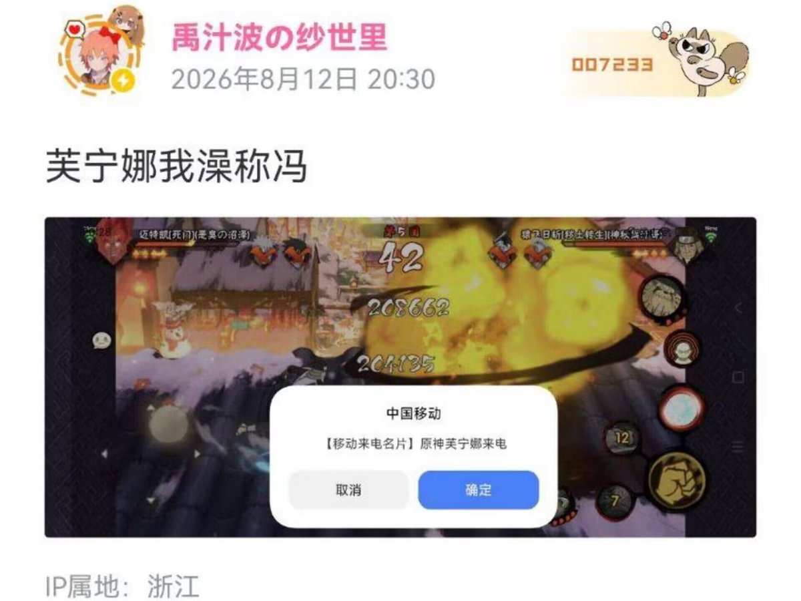

为什么开了免打扰人家米哈游照样给你打电话？因为人家用的「零级短信」是无视免打扰的呀！
这就是为什么二游用零级短信打广告是恶心至极的行为。
首先，零级短信的设计初衷根本就不是为了展示你那个破广告，而是为了反诈和自然灾害预警。二游拿零级短信打广告，和在消防疏散通道的门上贴海报有什么区 别吗？
其次，由于其设计初衷，零级短信可以绕过手机的一切免打扰设置。因此，二游拿零级短信打广告，用户是没有任何办法屏蔽的。无论你是在打游戏，还是在线上会议，你必须中断你手机上的事情，关闭这个广告（多亏了二游厂商和运营商，環状線在 iPhone 上也体验了一把弹窗广告的感觉），然后挂掉二游给你打的推销电话。这种强行打广告的行为，真的没有违反《广告法》吗？

这就是为什么二游用零级短信打广告是恶心至极的行为。
首先，零级短信的设计初衷根本就不是为了展示你那个破广告，而是为了反诈和自然灾害预警。二游拿零级短信打广告，和在消防疏散通道的门上贴海报有什么区 别吗？
其次，由于其设计初衷，零级短信可以绕过手机的一切免打扰设置。因此，二游拿零级短信打广告，用户是没有任何办法屏蔽的。无论你是在打游戏，还是在线上会议，你必须中断你手机上的事情，关闭这个广告（多亏了二游厂商和运营商，環状線在 iPhone 上也体验了一把弹窗广告的感觉），然后挂掉二游给你打的推销电话。这种强行打广告的行为，真的没有违反《广告法》吗？


想象中零级短信的用途：
推送地震预警、台风海啸、防灾减灾等紧急通知，提醒用户即时避难；在检测到风险时发送反诈提醒，防止用户财产损失。
实际上零级短信的用途： https://t.co/DBzgp4xPCI
推送地震预警、台风海啸、防灾减灾等紧急通知，提醒用户即时避难；在检测到风险时发送反诈提醒，防止用户财产损失。
实际上零级短信的用途： https://t.co/DBzgp4xPCI